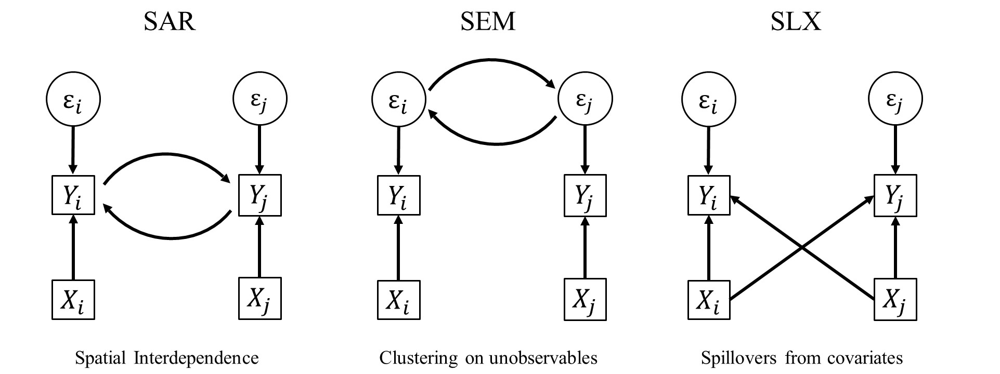
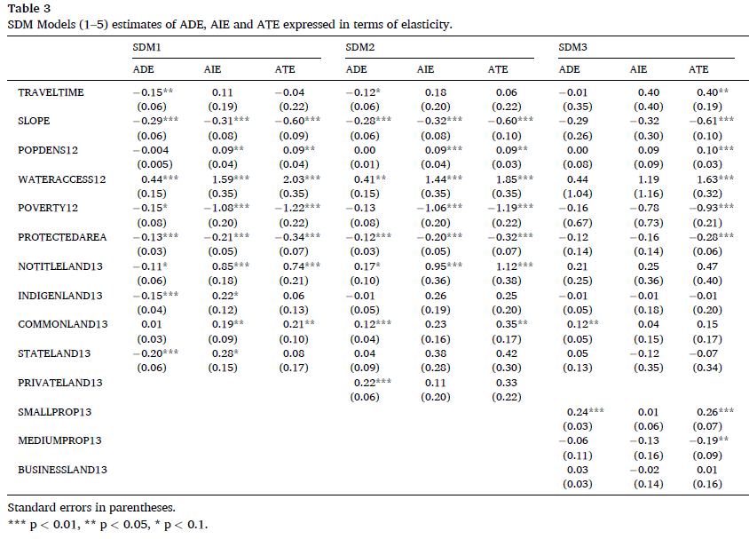
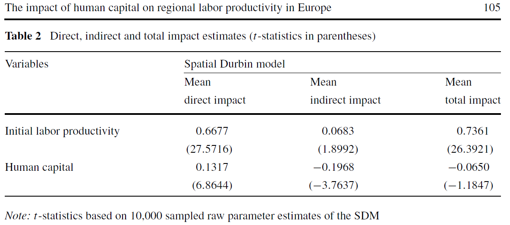
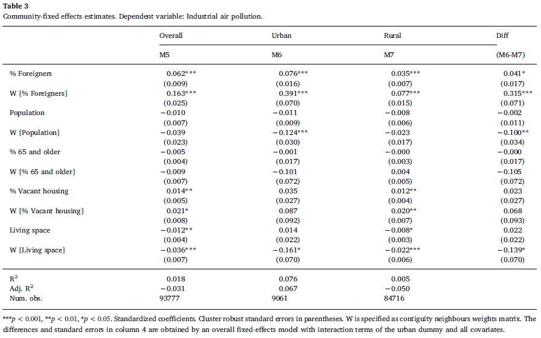
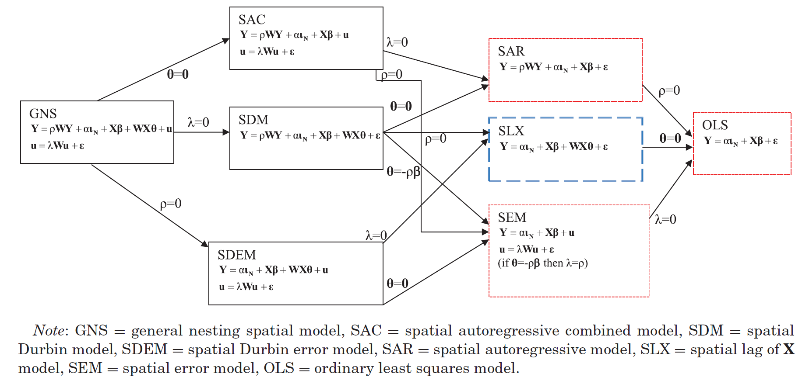
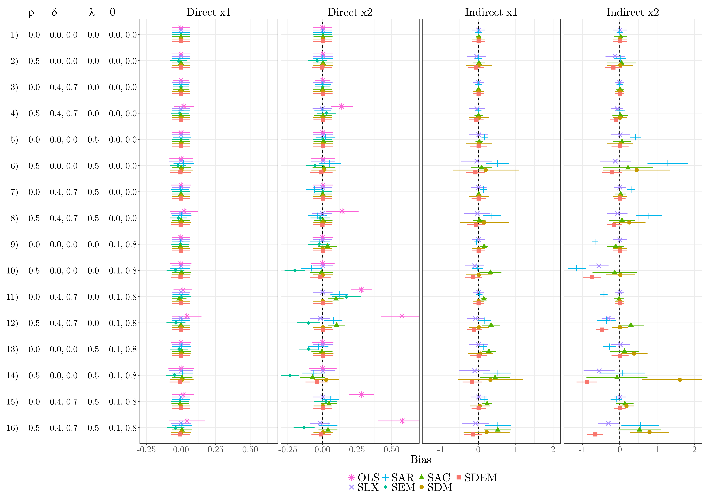

5 Spatial Impacts
\[ \newcommand{\Exp}{\mathrm{E}} \newcommand\given[1][]{\:#1\vert\:} \newcommand{\Cov}{\mathrm{Cov}} \newcommand{\Var}{\mathrm{Var}} \newcommand{\rank}{\mathrm{rank}} \newcommand{\bm}[1]{\boldsymbol{\mathbf{#1}}} \newcommand{\tr}{\mathrm{tr}} \newcommand{\irow}[1]{% \begin{pmatrix}#1\end{pmatrix} } \]
Required packages
Session info
R version 4.3.1 (2023-06-16 ucrt)
Platform: x86_64-w64-mingw32/x64 (64-bit)
Running under: Windows 10 x64 (build 19044)
Matrix products: default
locale:
[1] LC_COLLATE=English_United Kingdom.utf8
[2] LC_CTYPE=English_United Kingdom.utf8
[3] LC_MONETARY=English_United Kingdom.utf8
[4] LC_NUMERIC=C
[5] LC_TIME=English_United Kingdom.utf8
time zone: Europe/Berlin
tzcode source: internal
attached base packages:
[1] stats graphics grDevices utils datasets methods
[7] base
other attached packages:
[1] viridisLite_0.4.2 tmap_3.3-3 spatialreg_1.2-9
[4] Matrix_1.5-4.1 spdep_1.2-8 spData_2.3.0
[7] mapview_2.11.0 sf_1.0-13
loaded via a namespace (and not attached):
[1] xfun_0.39 raster_3.6-23 htmlwidgets_1.6.2
[4] lattice_0.21-8 vctrs_0.6.3 tools_4.3.1
[7] crosstalk_1.2.0 LearnBayes_2.15.1 generics_0.1.3
[10] parallel_4.3.1 sandwich_3.0-2 stats4_4.3.1
[13] tibble_3.2.1 proxy_0.4-27 fansi_1.0.4
[16] pkgconfig_2.0.3 KernSmooth_2.23-21 satellite_1.0.4
[19] RColorBrewer_1.1-3 leaflet_2.1.2 webshot_0.5.5
[22] lifecycle_1.0.3 compiler_4.3.1 deldir_1.0-9
[25] munsell_0.5.0 terra_1.7-39 leafsync_0.1.0
[28] codetools_0.2-19 stars_0.6-1 htmltools_0.5.5
[31] class_7.3-22 pillar_1.9.0 MASS_7.3-60
[34] classInt_0.4-9 lwgeom_0.2-13 wk_0.7.3
[37] abind_1.4-5 boot_1.3-28.1 multcomp_1.4-25
[40] nlme_3.1-162 tidyselect_1.2.0 digest_0.6.32
[43] mvtnorm_1.2-2 dplyr_1.1.2 splines_4.3.1
[46] fastmap_1.1.1 grid_4.3.1 colorspace_2.1-0
[49] expm_0.999-7 cli_3.6.1 magrittr_2.0.3
[52] base64enc_0.1-3 dichromat_2.0-0.1 XML_3.99-0.14
[55] survival_3.5-5 utf8_1.2.3 TH.data_1.1-2
[58] leafem_0.2.0 e1071_1.7-13 scales_1.2.1
[61] sp_1.6-1 rmarkdown_2.23 zoo_1.8-12
[64] png_0.1-8 coda_0.19-4 evaluate_0.21
[67] knitr_1.43 tmaptools_3.1-1 s2_1.1.4
[70] rlang_1.1.1 Rcpp_1.0.10 glue_1.6.2
[73] DBI_1.1.3 rstudioapi_0.14 jsonlite_1.8.5
[76] R6_2.5.1 units_0.8-2 Reload data from pervious session
load("_data/msoa2_spatial.RData")
5.1 Coefficient estimates \(\neq\) `marginal’ effects
Do not interpret coefficients as marginal effects in SAR, SAC, and SDM!!
At first glance, the specifications presented above seem relatively similar in the way of modelling spatial effects. Yet, they differ in very important aspects.
First, models with an endogenous spatial term (SAR, SAC, and SDM) assume a very different spatial dependence structure than models with only exogenous spatial terms as SLX and SDEM specifications. While the first three assume global spatial dependence, the second two assume local spatial dependence (Anselin 2003; Halleck Vega and Elhorst 2015; LeSage and Pace 2009).
Second, the interpretation of the coefficients differs greatly between models with and without endogenous effects. This becomes apparent when considering the reduced form of the equations above. Exemplary using the SAR model, the reduced form is given by:
\[ \begin{split} {\bm y}-\rho{\bm W}{\bm y} &={\bm X}{\bm \beta}+ {\bm \varepsilon}, \nonumber \\ ({\bm I_N}-\rho {\bm W}){\bm y} &={\bm X}{\bm \beta}+ {\bm \varepsilon}\nonumber, \\ {\bm y} &=({\bm I_N}-\rho {\bm W})^{-1}({\bm X}{\bm \beta}+ {\bm \varepsilon}), \end{split} \]
where \({\bm I_N}\) is an \(N \times N\) diagonal matrix (diagonal elements equal 1, 0 otherwise). This contains no spatially lagged dependent variable on the right-hand side.
If we want to interpret coefficient, we are usually in marginal or partial effects (the association between a unit change in \(X\) and \(Y\)). We obtain these effects by looking at the first derivative.
When taking the first derivative of the explanatory variable \({\bm x}_k\) from the reduced form in (\(\ref{eq:sarred}\)) to interpret the partial effect of a unit change in variable \({\bm x}_k\) on \({\bm y}\), we receive
\[ \frac{\partial {\bm y}}{\partial {\bm x}_k}=\underbrace{({\bm I_N}-\rho {\bm W})^{-1}}_{N \times N}\beta_k, \]
for each covariate \(k=\{1,2,...,K\}\). As can be seen, the partial derivative with respect to \({\bm x}_k\) produces an \(N \times N\) matrix, thereby representing the partial effect of each unit \(i\) onto the focal unit \(i\) itself and all other units .
Note that the diagonal elements of \(({\bm I_N}-\rho {\bm W})^{-1}\) are not zero anymore (as they are in \(\bm W\)). Look at the following minimal example:
\[ \begin{split} \tilde{\bm W} = \begin{pmatrix} 0 & 1 & 0 & 1 & 0 \\ 1 & 0 & 1 & 0 & 1 \\ 0 & 1 & 0 & 1 & 0 \\ 1 & 0 & 1 & 0 & 1 \\ 0 & 1 & 0 & 1 & 0 \end{pmatrix}, \mathrm{and~normalized} ~ \bm W = \begin{pmatrix} 0 & 0.5 & 0 & 0.5 & 0 \\ 0.33 & 0 & 0.33 & 0 & 0.33 \\ 0 & 0.5 & 0 & 0.5 & 0 \\ 0.33 & 0 & 0.33 & 0 & 0.33 \\ 0 & 0.5 & 0 & 0.5 & 0 \end{pmatrix} \end{split} \]
and
\[ \rho = 0.6, \]
then
\[ \begin{split} \rho \bm W = \begin{pmatrix} 0 & 0.3 & 0 & 0.3 & 0 \\ 0.2 & 0 & 0.2 & 0 & 0.2 \\ 0 & 0.3 & 0 & 0.3 & 0 \\ 0.2 & 0 & 0.2 & 0 & 0.2 \\ 0 & 0.3 & 0 & 0.3 & 0 \end{pmatrix}. \end{split} \]
If we want to get the total effect of \(X\) on \(Y\) we need to add the direct association within \(i\) and \(j\) and so on…
\[ \begin{split} \bm I_N - \rho \bm W &= \begin{pmatrix} 1 & 0 & 0 & 0 & 0 \\ 0 & 1 & 0 & 0 & 0 \\ 0 & 0 & 1 & 0 & 0 \\ 0 & 0 & 0 & 1 & 0 \\ 0 & 1 & 0 & 0 & 1 \end{pmatrix} - \begin{pmatrix} 0 & 0.3 & 0 & 0.3 & 0 \\ 0.2 & 0 & 0.2 & 0 & 0.2 \\ 0 & 0.3 & 0 & 0.3 & 0 \\ 0.2 & 0 & 0.2 & 0 & 0.2 \\ 0 & 0.3 & 0 & 0.3 & 0 \end{pmatrix}\\ & = \begin{pmatrix} 1 & -0.3 & 0 & -0.3 & 0 \\ -0.2 & 1 & -0.2 & 0 & -0.2 \\ 0 & 0.3 & 1 & 0.3 & 0 \\ -0.2 & 0 & -0.2 & 1 & -0.2 \\ 0 & -0.3 & 0 & -0.3 & 1 \end{pmatrix}. \end{split} \]
And finally we take the inverse of that
\[ \begin{split} (\bm I_N - \rho \bm W)^{-1} &= \begin{pmatrix} 1 & -0.3 & 0 & -0.3 & 0 \\ -0.2 & 1 & -0.2 & 0 & -0.2 \\ 0 & 0.3 & 1 & 0.3 & 0 \\ -0.2 & 0 & -0.2 & 1 & -0.2 \\ 0 & -0.3 & 0 & -0.3 & 1 \end{pmatrix}^{-1}\\ &= \begin{pmatrix} \color{red}{1.1875} & 0.46875 & 0.1875 & 0.46875 & 0.1875 \\ 0.3125 & \color{red}{1.28125} & 0.3125 & 0.28125 & 0.3125 \\ 0.1875 & 0.46875 & \color{red}{1.1875} & 0.46875 & 0.1875 \\ 0.3125 & 0.28125 & 0.3125 & \color{red}{1.28125} & 0.3125 \\ 0.1875 & 0.46875 & 0.1875 & 0.46875 & \color{red}{1.1875} \end{pmatrix}. \end{split} \]
As you can see, \((\bm I_N - \rho \bm W)^{-1}\) has \(\color{red}{diagonal~elements}\) \(>1\): these are feedback loops. My \(X\) influences my \(Y\) directly, but my \(Y\) then influences my neigbour’s \(Y\), which then influences my \(Y\) again (also also other neighbour’s \(Y\)s). Thus the influence of my \(X\) on my \(Y\) includes a spatial multiplier.
Check yourself:
I = diag(5)
rho = 0.6
W = matrix(c(0 , 0.5 , 0 , 0.5 , 0,
1/3 , 0 , 1/3 , 0 , 1/3,
0 , 0.5 , 0 , 0.5 , 0,
1/3 , 0 , 1/3 , 0 , 1/3,
0 , 0.5 , 0 , 0.5 , 0), ncol = 5, byrow = TRUE)
(IrW = I - rho*W) [,1] [,2] [,3] [,4] [,5]
[1,] 1.0 -0.3 0.0 -0.3 0.0
[2,] -0.2 1.0 -0.2 0.0 -0.2
[3,] 0.0 -0.3 1.0 -0.3 0.0
[4,] -0.2 0.0 -0.2 1.0 -0.2
[5,] 0.0 -0.3 0.0 -0.3 1.0# (I - rho*W)^-1
(M = solve(IrW)) [,1] [,2] [,3] [,4] [,5]
[1,] 1.1875 0.46875 0.1875 0.46875 0.1875
[2,] 0.3125 1.28125 0.3125 0.28125 0.3125
[3,] 0.1875 0.46875 1.1875 0.46875 0.1875
[4,] 0.3125 0.28125 0.3125 1.28125 0.3125
[5,] 0.1875 0.46875 0.1875 0.46875 1.1875The diagonal elements of \(M\) indicate how each unit \(i\) influences itself (change of \(x_i\) on change of \(y_i\)), and each off-diagonal elements in column \(j\) represents the effect of \(j\) on each other unit \(i\) (change of \(x_j\) on change of \(y_i\)).
\[ \begin{split} \begin{pmatrix} 1.1875 & \color{red}{0.46875} & 0.1875 & 0.46875 & 0.1875 \\ 0.3125 & 1.28125 & 0.3125 & 0.28125 & 0.3125 \\ 0.1875 & 0.46875 & 1.1875 & 0.46875 & 0.1875 \\ 0.3125 & 0.28125 & 0.3125 & 1.28125 & 0.3125 \\ 0.1875 & 0.46875 & \color{blue}{0.1875} & 0.46875 & 1.1875 \end{pmatrix}. \end{split} \]
For instance, \(\color{red}{W_{12}}\) indicates that unit 2 has an influence of 0.46875 on unit 1. On the other hand, \(\color{blue}{W_{53}}\) indicates that unit 3 has an influence of magnitude 0.1875 on unit 5.
Why does unit 3 have any effect o unit 5? According to \(\bm W\) those two units are no neighbours \(w_{53} = 0\)!
5.2 Global and local spillovers
The kind of indirect spillover effects in SAR, SAC, and SDM models differs from the kind of indirect spillover effects in SLX and SDEM models: while the first three specifications represent global spillover effects, the latter three represent local spillover effects (Anselin 2003; LeSage and Pace 2009; LeSage 2014).
5.2.1 Local spillovers
In case of SLX and SDEM the spatial spillover effects can be interpreted as the effect of a one unit change of \({\bm x}_k\) in the spatially weighted neighbouring observations on the dependent variable of the focal unit: the weighted average among neighbours; when using a row-normalised contiguity weights matrix, \({\bm W} {\bm x}_k\) is the mean value of \({\bm x}_k\) in the neighbouring units.
Assume we have \(k =2\) covariates, then
\[ \begin{split} \underbrace{\bm W}_{N \times N} \underbrace{\bm X}_{N \times 2} \underbrace{\bm \theta}_{2 \times 1} & = \begin{pmatrix} 0 & 0.5 & 0 & 0.5 & 0 \\ 0.33 & 0 & 0.33 & 0 & 0.33 \\ 0 & 0.5 & 0 & 0.5 & 0 \\ 0.33 & 0 & 0.33 & 0 & 0.33 \\ 0 & 0.5 & 0 & 0.5 & 0 \end{pmatrix} \begin{pmatrix} 3 & 100 \\ 4 & 140 \\ 1 & 200 \\ 7 & 70 \\ 5 & 250 \end{pmatrix} \begin{pmatrix} \theta_1 \\ \theta_2 \end{pmatrix}\\ & = \begin{pmatrix} 6 & 105 \\ 3 & 190 \\ 6 & 105 \\ 3 & 190 \\ 6 & 105 \end{pmatrix} \begin{pmatrix} \theta_1 \\ \theta_2 \end{pmatrix}\\ \end{split} \]
x1 x2
[1,] 6 105
[2,] 3 190
[3,] 6 105
[4,] 3 190
[5,] 6 105Thus, only direct neighbours – as defined in \({\bm W}\) – contribute to those local spillover effects. The \(\hat{\bm\theta}\) coefficients only estimate how my direct neighbour’s \(\bm X\) values influence my own outcome \(\bm y\).
There are no higher order neighbours involved (as long as we do not model them), nor are there any feedback loops due to interdependence.
5.2.2 Global spillovers
In contrast, spillover effects in SAR, SAC, and SDM models do not only include direct neighbours but also neighbours of neighbours (second order neighbours) and further higher-order neighbours. This can be seen by rewriting the inverse \(({\bm I_N}-\rho {\bm W})^{-1}\) as power series:A power series of \(\sum\nolimits_{k=0}^\infty {\bm W}^k\) converges to \(({\bm I}-{\bm W})^{-1}\) if the maximum absolute eigenvalue of \({\bm W} < 1\), which is ensured by standardizing \({\bm W}\).}
\[ \begin{split} ({\bm I_N}-\rho {\bm W})^{-1}\beta_k =({\bm I_N} + \rho{\bm W} + \rho^2{\bm W}^2 + \rho^3{\bm W}^3 + ...)\beta_k = ({\bm I_N} + \sum_{h=1}^\infty \rho^h{\bm W}^h)\beta_k , \end{split} \]
where the identity matrix represents the direct effects and the sum represents the first and higher order indirect effects and the above mentioned feedback loops. This implies that a change in one unit \(i\) does not only affect the direct neighbours but passes through the whole system towards higher-order neighbours, where the impact declines with distance within the neighbouring system. Global indirect impacts thus are `multiplied’ by influencing direct neighbours as specified in \(\bm W\) and indirect neighbours not connected according to \(\bm W\), with additional feedback loops between those neighbours.
\[ \begin{split} \underbrace{(\underbrace{\bm I_N}_{N \times N} - \underbrace{\rho}_{\hat{=} 0.6} \underbrace{\bm W}_{N \times N})^{-1}}_{N \times N} \beta_k &= \begin{pmatrix} 1.\color{red}{1875} & 0.46875 & 0.1875 & 0.46875 & 0.1875 \\ 0.3125 & 1.\color{red}{28125} & 0.3125 & 0.28125 & 0.3125 \\ 0.1875 & 0.46875 & 1.\color{red}{1875} & 0.46875 & 0.1875 \\ 0.3125 & 0.28125 & 0.3125 & 1.\color{red}{28125} & 0.3125 \\ 0.1875 & 0.46875 & 0.1875 & 0.46875 & 1.\color{red}{1875} \end{pmatrix} \begin{matrix} (\beta_1 + \beta_2)\\ \end{matrix}\\. \end{split} \]
All diagonal elements of \(\mathrm{diag}({\bm W})=w_{ii}=0\). However, diagonal elements of higher order neighbours are not zero \(\mathrm{diag}({\bm W}^2)=\mathrm{diag}({\bm W}{\bm W})\neq0\).
Intuitively, \(\rho{\bm W}\) only represents the effects between direct neighbours (and the focal unit is not a neighbour of the focal unit itself), whereas \(\rho^2{\bm W}^2\) contains the effects of second order neighbours, where the focal unit is a second order neighbour of the focal unit itself. Thus, \(({\bm I_N}-\rho {\bm W})^{-1}\beta_k\) includes feedback effects from \(\rho^2{\bm W}^2\) on (they are part of the direct impacts according to the summary measures below). This is way the diagonal above \(\geq 1\).
In consequence, local and global spillover effects represent two distinct kinds of spatial spillover effects (LeSage 2014). The interpretation of local spillover effects is straightforward: it represents the effect of all neighbours as defined by \({\bm W}\) (the average over all neighbours in case of a row-normalised weights matrix).
For instance, the environmental quality in the focal unit itself but also in neighbouring units could influence the attractiveness of a district and its house prices. In this example it seems reasonable to assume that we have local spillover effects: only the environmental quality in directly contiguous units (e.g. in walking distance) is relevant for estimating the house prices.
In contrast, interpreting global spillover effects can be a bit more difficult. Intuitively, the global spillover effects can be seen as a kind of diffusion process. For example, an exogenous event might increase the house prices in one district of a city, thus leading to an adaptation of house prices in neighbouring districts, which then leads to further adaptations in other units (the neighbours of the neighbours), thereby globally diffusing the effect of the exogenous event due to the endogenous term.
Yet, those processes happen over time. In a cross-sectional framework, the global spillover effects are hard to interpret. Anselin (2003) proposes an interpretation as an equilibrium outcome, where the partial impact represents an estimate of how this long-run equilibrium would change due to a change in \({\bm x}_k\) (LeSage 2014).
5.3 Summary impact measures
Note that the derivative in SAR, SAC, and SDM is a \(N \times N\) matrix, returning individual effects of each unit on each other unit, differentiated in direct, indirect, and total impacts.
\[ \begin{split} (\bm I_N - \rho \bm W)^{-1} \beta &= \begin{pmatrix} \color{red}{1.1875} & \color{blue}{0.46875} & \color{blue}{0.1875} & \color{blue}{0.46875} & \color{blue}{0.1875} \\ \color{blue}{0.3125} & \color{red}{1.28125} & \color{blue}{0.3125} & \color{blue}{0.28125} & \color{blue}{0.3125} \\ \color{blue}{0.1875} & \color{blue}{0.46875} & \color{red}{1.1875} & \color{blue}{0.46875} & \color{blue}{0.1875} \\ \color{blue}{0.3125} & \color{blue}{0.28125} & \color{blue}{0.3125} & \color{red}{1.28125} & \color{blue}{0.3125} \\ \color{blue}{0.1875} & \color{blue}{0.46875} & \color{blue}{0.1875} & \color{blue}{0.46875} & \color{red}{1.1875} \end{pmatrix} \beta \end{split} \]
However, the individual effects (how \(i\) influences \(j\)) mainly vary because of variation in \({\bm W}\).
We estimate two scalar parameters in a SAR model: \(\beta\) for the direct coefficient and \(rho\) for the auto-regressive parameter.
All variation in the effects matrix \((\bm I_N - \rho \bm W)^{-1}\) comes from the relationship in \(\bm W\) which we have given a-priori!
Since reporting the individual partial effects is usually not of interest, LeSage and Pace (2009) proposed to average over these effect matrices. While the average diagonal elements of the effects matrix \((\bm I_N - \rho \bm W)^{-1}\) represent the so called direct impacts of variable \({\bm x}_k\), the average column-sums of the off-diagonal elements represent the so called indirect impacts (or spatial spillover effects).
direct impacts refer to an average effect of a unit change in \(x_i\) on \(y_i\), and the indirect (spillover) impacts indicate how a change in \(x_i\), on average, influences all neighbouring units \(y_j\).
Though previous literature (Halleck Vega and Elhorst 2015; LeSage and Pace 2009) has established the notation of direct and indirect impacts, it is important to note that also the direct impacts comprise a spatial `multiplier’ component if we specify an endogenous lagged depended variable, as a change in \(\bm x_i\) influences \(\bm y_i\), which influences \(\bm y_j\), which in turn influences \(\bm y_i\).
Usually, one should use summary measures to report effects in spatial models (LeSage and Pace 2009). Halleck Vega and Elhorst (2015) provide a nice summary of the impacts for each model:
| Model | Direct Impacts | Indirect Impacts | type |
|---|---|---|---|
| OLS/SEM | \(\beta_k\) | – | – |
| SAR/SAC | Diagonal elements of \(({\bm I}-\rho{\bm W})^{-1}\beta_k\) | Off-diagonal elements of \(({\bm I}-\rho{\bm W})^{-1}\beta_k\) | global |
| SLX/SDEM | \(\beta_k\) | \(\theta_k\) | local |
| SDM | Diagonal elements of \(({\bm I}-\rho{\bm W})^{-1}\left[\beta_k+{\bm W}\theta_k\right]\) | Off-diagonal elements of \(({\bm I}-\rho{\bm W})^{-1}\left[\beta_k+{\bm W}\theta_k\right]\) | global |
\[ \begin{split} (\bm I_N - \rho \bm W)^{-1} \beta &= \begin{pmatrix} \color{red}{1.1875} & \color{blue}{0.46875} & \color{blue}{0.1875} & \color{blue}{0.46875} & \color{blue}{0.1875} \\ \color{blue}{0.3125} & \color{red}{1.28125} & \color{blue}{0.3125} & \color{blue}{0.28125} & \color{blue}{0.3125} \\ \color{blue}{0.1875} & \color{blue}{0.46875} & \color{red}{1.1875} & \color{blue}{0.46875} & \color{blue}{0.1875} \\ \color{blue}{0.3125} & \color{blue}{0.28125} & \color{blue}{0.3125} & \color{red}{1.28125} & \color{blue}{0.3125} \\ \color{blue}{0.1875} & \color{blue}{0.46875} & \color{blue}{0.1875} & \color{blue}{0.46875} & \color{red}{1.1875} \end{pmatrix} \beta \end{split} \]
The different indirect effects / spatial effects mean conceptually different things:
Global spillover effects: SAR, SAC, SDM
Local spillover effects: SLX, SDEM
Note that impacts in SAR only estimate one single spatial multiplier coefficient. Thus direct and indirect impacts are bound to a common ratio, say \(\phi\), across all covariates.
if \(\beta_1^{direct} = \phi\beta_1^{indirect}\), then \(\beta_2^{direct} = \phi\beta_2^{indirect}\), \(\beta_k^{direct} = \phi\beta_k^{indirect}\).
We can calculate these impacts using impacts() with simulated distributions, e.g. for the SAR model:
mod_1.sar.imp <- impacts(mod_1.sar, listw = queens.lw, R = 300)
summary(mod_1.sar.imp, zstats = TRUE, short = TRUE)Impact measures (lag, exact):
Direct Indirect Total
log(no2) 0.447853184 0.754466618 1.202319802
log(POPDEN) -0.062973027 -0.106086209 -0.169059236
per_mixed 0.020884672 0.035182931 0.056067603
per_asian -0.002575602 -0.004338934 -0.006914536
per_black -0.014253206 -0.024011369 -0.038264575
per_other -0.001820705 -0.003067212 -0.004887917
========================================================
Simulation results ( variance matrix):
========================================================
Simulated standard errors
Direct Indirect Total
log(no2) 0.0471443896 0.0961388132 0.131847219
log(POPDEN) 0.0144486774 0.0264169250 0.040078741
per_mixed 0.0063828981 0.0112090011 0.017397327
per_asian 0.0005440795 0.0008713069 0.001374171
per_black 0.0010517710 0.0021671020 0.002690620
per_other 0.0034401571 0.0059775541 0.009405043
Simulated z-values:
Direct Indirect Total
log(no2) 9.6647056 7.9517091 9.2539269
log(POPDEN) -4.4602546 -4.1027782 -4.3122004
per_mixed 3.2546484 3.1143407 3.2006491
per_asian -4.7957945 -5.0017765 -5.0702380
per_black -13.5797030 -11.0435775 -14.2031561
per_other -0.5260023 -0.5305485 -0.5296002
Simulated p-values:
Direct Indirect Total
log(no2) < 2.22e-16 1.7764e-15 < 2.22e-16
log(POPDEN) 8.1862e-06 4.0822e-05 1.6164e-05
per_mixed 0.0011353 0.0018436 0.0013712
per_asian 1.6203e-06 5.6804e-07 3.9732e-07
per_black < 2.22e-16 < 2.22e-16 < 2.22e-16
per_other 0.5988866 0.5957317 0.5963891 # Alternative with traces (better for large W)
W <- as(queens.lw, "CsparseMatrix")
trMatc <- trW(W, type = "mult",
m = 30) # number of powers
mod_1.sar.imp2 <- impacts(mod_1.sar,
tr = trMatc, # trace instead of listw
R = 300,
Q = 30) # number of power series used for approximation
summary(mod_1.sar.imp2, zstats = TRUE, short = TRUE)Impact measures (lag, trace):
Direct Indirect Total
log(no2) 0.447853101 0.754459497 1.202312598
log(POPDEN) -0.062973015 -0.106085208 -0.169058223
per_mixed 0.020884668 0.035182599 0.056067267
per_asian -0.002575601 -0.004338893 -0.006914494
per_black -0.014253203 -0.024011142 -0.038264346
per_other -0.001820704 -0.003067183 -0.004887888
========================================================
Simulation results ( variance matrix):
========================================================
Simulated standard errors
Direct Indirect Total
log(no2) 0.0472008856 0.0899006803 0.126171687
log(POPDEN) 0.0135389561 0.0248391431 0.037622110
per_mixed 0.0062657311 0.0113397782 0.017422033
per_asian 0.0005111060 0.0008235602 0.001296933
per_black 0.0009411836 0.0021719937 0.002625997
per_other 0.0032185481 0.0055195057 0.008729329
Simulated z-values:
Direct Indirect Total
log(no2) 9.4873263 8.4208512 9.5492934
log(POPDEN) -4.6251393 -4.2721683 -4.4850370
per_mixed 3.3302710 3.1263263 3.2325980
per_asian -5.0644833 -5.2949991 -5.3582105
per_black -15.1162453 -11.0781735 -14.5807020
per_other -0.5394061 -0.5460176 -0.5441257
Simulated p-values:
Direct Indirect Total
log(no2) < 2.22e-16 < 2.22e-16 < 2.22e-16
log(POPDEN) 3.7435e-06 1.9358e-05 7.2901e-06
per_mixed 0.00086762 0.0017701 0.0012267
per_asian 4.0951e-07 1.1902e-07 8.4050e-08
per_black < 2.22e-16 < 2.22e-16 < 2.22e-16
per_other 0.58960667 0.5850538 0.5863550 The indirect effects in SAR, SAC, and SDM refer to global spillover effects. This means a change of \(x\) in the focal units flows through the entire system of neighbours (direct nieightbours, neighbours of neighbours, …) influencing ‘their \(y\)’. One can think of this as diffusion or a change in a long-term equilibrium.
If Log NO2 increases by one unit, this increases the house price in the focal unit by 0.448 units. Overall, a one unit change in log NO2 increases the house prices in the entire neighbourhood system (direct and higher order neighbours) by 0.754.
For SLX models, nothing is gained from computing the impacts, as they equal the coefficients. Again, it’s the effects of direct neighbours only.
print(impacts(mod_1.slx, listw = queens.lw))Impact measures (SlX, glht):
Direct Indirect Total
log(no2) -0.440727458 0.993602103 0.552874645
log(POPDEN) -0.076839828 0.113262218 0.036422390
per_mixed -0.033042221 0.126068686 0.093026466
per_asian -0.002380698 -0.003828126 -0.006208824
per_black -0.016229407 -0.018053503 -0.034282910
per_other -0.020391354 0.048139008 0.0277476545.4 Examples
Boillat, Ceddia, and Bottazzi (2022)
The paper investigates the effects of protected areas and various land tenure regimes on deforestation and possible spillover effects in Bolivia, a global tropical deforestation hotspot.

Protected areas – which in Bolivia are all based on co-management schemes - also protect forests in adjacent areas, showing an indirect protective spillover effect. Indigenous lands however only have direct forest protection effects.
Fischer et al. (2009)
The focus of this paper is on the role of human capital in explaining labor productivity variation among 198 European regions within a regression framework.

A ceteris paribus increase in the level of human capital is found to have a significant and positive direct impact. But this positive direct impact is offset by a significant and negative indirect (spillover) impact leading to a total impact that is not significantly different from zero.
The intuition here arises from the notion that it is relative regional advantages in human capital that matter most for labor productivity, so changing human capital across all regions should have little or no total impact on (average) labor productivity levels.
Rüttenauer (2018)
This study investigates the presence of environmental inequality in Germany - the connection between the presence of foreign-minority population and objectively measured industrial pollution.

Results reveal that the share of minorities within a census cell indeed positively correlates with the exposure to industrial pollution. Furthermore, spatial spillover effects are highly relevant: the characteristics of the neighbouring spatial units matter in predicting the amount of pollution. Especially within urban areas, clusters of high minority neighbourhoods are affected by high levels of environmental pollution.
5.5 Comparing and Selecting Models
As we have seen, a variety of spatial model specifications exist that can be used to account for the spatial structure of the data. Thus, selecting the correct model specification remains a crucial task in applied research.
One way of selecting the model specification is the application of empirical specification tests. In general, there are two different strategies: a specific-to-general or a general-to-specific approach (Florax, Folmer, and Rey 2003; Mur and Angulo 2009).
5.5.1 Specific-to-general
The specific-to-general approach is more common in spatial econometrics. This approach starts with the most basic non-spatial model and tests for possible misspecifications due to omitted autocorrelation in the error term or the dependent variable.
Anselin et al. (1996) proposed to use Lagrange multiplier (LM) tests for the hypotheses \(H_0\): \(\lambda=0\) and \(H_0\): \(\rho=0\), which are robust against the alternative source of spatial dependence.
Lagrange Multiplier Test
We have earlier talked about methods to detect auto-correlation – visualisation and Moran’s I. Both methodscan tell us that there is spatial autocorrelation. However, both method do not provide any information on why there is autocorrelation. Possible reasons:
- Interdependence (\(\rho\))
- Clustering on unobservables (\(\lambda\))
- Spillovers in covariates (\(\bm \theta\))
Lagrange Multiplier test (Anselin et al. 1996):
(Robust) test for spatial lag dependence \(LM_\rho^*\)
(Robust) test for spatial error dependence \(LM_\lambda^*\)
Robust test for lag dependence: \(H_0\): \(\rho=0\) \[ LM_\rho^* = G^{-1} \hat{\sigma}_\epsilon^2 \big(\frac{ \hat{\bm\epsilon}^\intercal \bm{Wy}}{\hat{\sigma}_\epsilon^2} - \frac{\hat{\bm \epsilon}^\intercal \bm{W\hat{\epsilon}}}{\hat{\sigma}_\epsilon^2} \big)^2 \sim \chi^2 \]
Robust test for error dependence: \(H_0\): \(\lambda=0\)
\[ LM_\lambda^* = \frac{ \big( \hat{\bm\epsilon}^\intercal \bm{W\hat{\epsilon}} / \hat{\sigma}_\epsilon^2 - [T\hat{\sigma}_\epsilon^2(G + T\hat{\sigma}_\epsilon^2)^{-1}] \hat{\bm\epsilon}^\intercal \bm{Wy} / \hat{\sigma}_\epsilon^2 \big)^2 }{ T[1 - \frac{\hat{\sigma}_\epsilon^2}{G + \hat{\sigma}_\epsilon^2}] } \sim \chi^2 \] with \[ \begin{split} G &= (\bm{WX\hat{\beta}})^\intercal (\bm I - \bm X (\bm X^\intercal\bm X)^{-1} \bm X^\intercal) (\bm{WX\hat{\beta}}) \\ T &= \tr[(\bm W^\intercal + \bm W)\bm W], \end{split} \] where \(\tr(\bm A)\) is the sum of the main diagonal of any square matrix \(\bm A\).
Problem
The specific-to-general approach based on the robust LM test offers a good performance in distinguishing between SAR, SEM, and non-spatial OLS (Florax, Folmer, and Rey 2003).
Still, in their original paper, Anselin et al. (1996) already note the declining power of the robust LM\(_\lambda\) test for spatial error dependence with increasing autocorrelation in the dependent variable (indicating some uncertainty under a SAC-like DGP).
Mur and Angulo (2009) demonstrate strong drawbacks of the specific-to-general approach under non-optimal conditions like heteroscedasticity or endogeneity.
Moreover, the test disregard the presence of spatial dependence from local spillover effects (\(\theta\) is assumed to be zero), as resulting from an SLX-like process. Cook, Hays, and Franzese (2020), for instance, show theoretically that an SLX-like dependence structure leads to the rejection of both hypotheses \(H_0\): \(\lambda=0\) and \(H_0\): \(\rho=0\), though no autocorrelation is present (Elhorst and Halleck Vega 2017; Rüttenauer 2022).
5.5.2 General-to-specific approach
The general-to-specific approach depicts the opposite method of specification search. This approach starts with the most general model and stepwise imposes restrictions on the parameters of this general model.

In theory, we would
start with a GNS specification and
subsequently restrict the model to simplified specifications based on the significance of parameters in the GNS.
The problem with this strategy is that the GNS is only weakly identified and, thus, is of little help in selecting the correct restrictions (Burridge, Elhorst, and Zigova 2016).
The most intuitive alternative would be to start with one of the two-source models SDM, SDEM, or SAC. This, however, bears the risk of imposing the wrong restriction in the first place (Cook, Hays, and Franzese 2020). Furthermore, Cook, Hays, and Franzese (2020) show that more complicated restrictions are necessary to derive all single-source models from SDEM or SAC specifications.
5.5.3 General advice?
LeSage and Pace (2009), LeSage (2014), Elhorst (2014) argue that there are strong analytical reasons to restrict the model specifications to a subset, as the SDM subsumes the SLX and SAR model, and the SDEM subsumes SLX and SEM.
It is easily observed that SDM reduces to SLX if \(\rho=0\) and to SAR if \({\bm \theta}=0\), while the SDEM reduces to SLX if \(\lambda=0\) and to SEM if \({\bm \theta}=0\). Less intuitively, (Anselin 1988) has also shown that the SDM subsumes the SEM. Therefore, we can express the reduced form and rearrange terms:
\[ \begin{split} {\bm y}&= {\bm X}{\bm \beta} + ({\bm I_N}-\lambda {\bm W})^{-1}{\bm \varepsilon} \\ ({\bm I_N}-\lambda {\bm W}){\bm y}&= ({\bm I_N}-\lambda {\bm W}){\bm X}{\bm \beta} + {\bm \varepsilon} \\ ({\bm I_N}-\lambda {\bm W}){\bm y}&={\bm X}{\bm \beta} -\lambda{\bm W}{\bm X}{\bm \beta} + {\bm \varepsilon} \\ {\bm y}&=({\bm I_N}-\lambda {\bm W})^{-1}({\bm X}{\bm \beta} + {\bm W}{\bm X}{\bm \theta} + {\bm \varepsilon}). \end{split} \]
Thus, the SEM constitutes a special case of an SDM with the relative simple restriction \({\bm \theta}=-\lambda{\bm \beta}\), meaning direct and indirect effects are constrained to a common factor (Anselin 1988, 2003).
The fact that SDM subsumes SAR, SLX, and SEM leads to the conclusion that applied research should only consider SDM and SDEM as model specifications (LeSage 2014). Especially in the case of a likely omitted variable bias, (LeSage and Pace 2009, ~68) argue in favour of using the SDM.
Nonetheless, others propose to use the SLX specification as point of departure (Gibbons and Overman 2012; Halleck Vega and Elhorst 2015). First, scholars have argued that SAC and SDM models are only weakly identified in practice (Gibbons and Overman 2012; Pinkse and Slade 2010). Second, the global spillover specification in SAR, SAC, and SDM often seems to be theoretically implausible.
And finally:
5.5.4 Design and Theory
Some argue that the best way of choosing the appropriate model specification is to exclude one or more sources of spatial dependence – autocorrelation in the dependent variable, autocorrelation in the disturbances, or spatial spillover effects of the covariates – by design Gibbons, Overman, and Patacchini (2015).
Natural experiments are probably the best way of making one or more sources of spatial dependence unlikely, thereby restricting the model alternatives to a subset of all available models. However, the opportunities to use natural experiments are restricted in social sciences, making it a favourable but often impractical way of model selection.
Cook, Hays, and Franzese (2020) and Rüttenauer (2022) argue that theoretical considerations should guide the model selection.
Rule out some sources of spatial dependence by theory, and thus restrict the specifications to a subset ( Where does the spatial dependence come from? ),
Theoretical mechanisms may guide the choice of either global or local spillover effects.
5.5.5 SLX is robust
Rüttenauer (2022) provides Monte Carlo experiments on how different spatial models perform under different scenarios of misspecification. SLX - despite its simplicity - does a very good job even if it is the wrong model for the specific situation. I personally advice for SLX (or SDEM) as the most useful specification if you do not have theoretical assumptions about spatial interdependence in the outcome.
Having a spatially lagged dependent variable comes with an extra layer of complexity. I suggest to only use these models if you have a-priori reasons to believe that it is the correct specification for your study.
